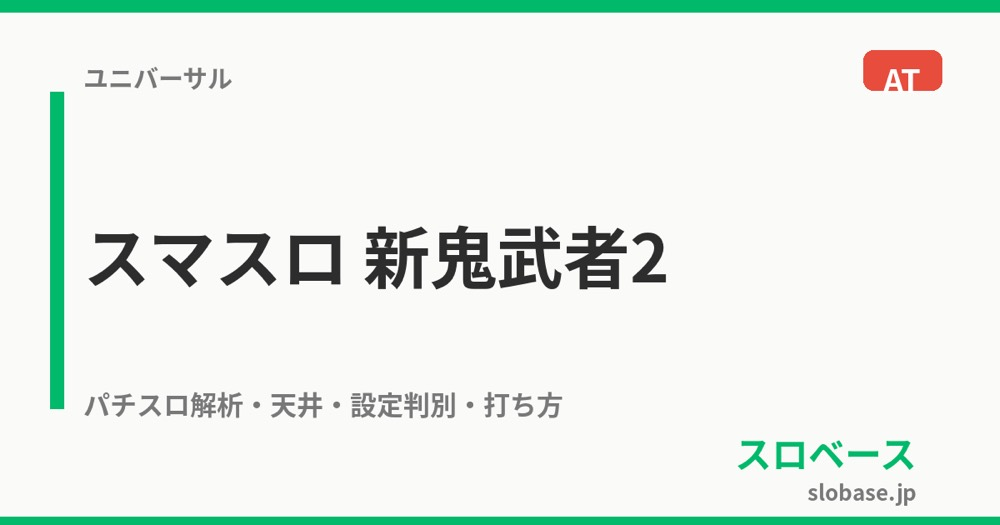

パチスロ 新鬼武者2
4G STのバッサリZONEから蒼剣RUSHへ。上乗せ、3種類のBONUS、幻魔京BATTLEを重ねる。
- 導入
- 2022年8月
- メーカー
- エンターライズ
- 分類
- パチスロ
主要スペック
バッサリZONEのアイコン進行から蒼剣RUSHへ入り、ゲーム数直乗せ、鬼武侠、3種類のBONUS、幻魔京BATTLE、金色覚醒鬼武者までを機種専用の順番で体験できます。
- バッサリZONEは4G ST・AT期待度約33%
- 蒼剣RUSHは初回40G＋α・以降30G＋α
- 継続率50%・66%・80%・89%
パチスロ 新鬼武者2の見どころと計算条件
バッサリZONEのアイコン進行から蒼剣RUSHへ入り、ゲーム数直乗せ、鬼武侠、3種類のBONUS、幻魔京BATTLE、金色覚醒鬼武者までを機種専用の順番で体験できます。
新鬼武者2を数字で早分かり
バッサリZONEから蒼剣RUSH、金色覚醒鬼武者までの流れと、設定ごとの結果差を固定レートで比較できます。
30秒で分かる新鬼武者2
4G STのCZを突破し、初回40Gの蒼剣RUSHで上乗せとBONUSを重ねながら幻魔京BATTLEを突破するゲーム数＋セット継続型ATです。
こんな遊び方に向いている
- 4G STのアイコン進行を楽しみたい
- 上乗せと3種類のBONUSを別々に見たい
- 幻魔京BATTLEから金色覚醒を狙いたい
遊ぶ前に確認したいこと
- 通常ATは純増約2.0枚/G
- BONUSは純増約4.0枚/G
- 非公表の細かな選択率は体験用代表値
4G STのバッサリZONE
通常時は主にレア役からバッサリZONEを目指します。4G以内に小役が成立するとアイコンが1段階進み、残り4Gへ再セット。HYPERは6Gスタートです。
終了時のアイコンは緑約20%、赤約50%、紫約75%、金以上はAT濃厚。専用進行では4G STと最終アイコンの期待度をAT期待度約33%へまとめています。
蒼剣RUSHと幻魔京BATTLE
蒼剣RUSHは純増約2.0枚/G。初回40G＋α、2セット目以降30G＋αで、継続率は50%・66%・80%・89%の4段階です。
残りゲーム数が0になると最大6Gの幻魔京BATTLEへ。勝利で次セットへ進み、レア役では勝利書き換えも抽選します。シミュレーターは公開継続率の中間的な66%を代表値としてセットごとに判定します。
ゲーム数上乗せと鬼武侠
AT中のレア役は直乗せ、宝玉獲得、リーチ目高確、BONUSを抽選します。獲得した宝玉はセット終盤の鬼武侠でゲーム数へ変換します。
直乗せは10G以上。一閃フリーズでは100〜300G級の上乗せがあり、演出上の+20Gは200G以上が濃厚です。サイトでは上乗せゲーム数と獲得枚数を分けて表示します。
3種類のBONUS
鬼BONUSは12G・約48枚、蒼剣BONUSは25G・約100枚、真蒼剣BONUSは40G・約160枚。BONUS中は純増約4.0枚/Gで、レア役からAT継続ストックを抽選します。
通常契機の種類振り分けは鬼50.0%、蒼剣41.4%、真蒼剣8.6%。BONUS後はリーチ目高確へ入り、次のBONUSループを狙います。
金色覚醒鬼武者
金色フリーズなどから突入するプレミアムルートで、AT継続率89%とBONUS継続率最大80%のWループが特徴です。
専用進行では通常ATとは別の上位区間として表示し、セット継続とBONUS報酬を分けて集計します。金色覚醒の細かな突入率は非公表のため体験用代表値です。
固定条件と簡略化する範囲
- 約37G/50枚・1,000円46枚貸し・5.2枚交換で固定
- 設定1〜6のAT初当り・出玉率を公開値で反映
- CZ・初回40G・以降30G・上乗せ・3種BONUS・継続バトルを専用表示
- 継続率モード選択率、レア役出現順、金色覚醒突入率は体験用代表値
- 19,000枚到達時はコンプリート表示
平均Gと投資目安の計算
掲載する蒼剣RUSH初当り約1/405.2は設定1基準です。当サイトでは50枚あたり37G、1,000円46枚貸しの固定条件から、設定1基準の平均投資目安を約11,900円と計算します。
シミュレーターでは設定1〜6を均等抽選します。設定1〜6で公開されている初当り値を個別に使います。公開されていない特化ゾーン・上位到達率の設定差は加えません。 換金は5.2枚交換で固定し、結果とランキングに設定を表示します。
シミュレーション結果の見方
当るまでバッサリZONE・蒼剣RUSHまでのゲーム数
設定設定1・2・3・4・5・6から抽選された今回の設定
上位到達金色フリーズと金色覚醒鬼武者への到達
最終収支差枚と5.2枚交換の収支目安
結果は自動で「マイ記録」に保存され、同じ機種を何回試したか、最高収支、勝率をあとから確認できます。
簡易シミュレーターについて
バッサリZONE・蒼剣RUSH・金色覚醒鬼武者の流れを固定条件で体験できます。JavaScriptを有効にすると、この位置にシミュレーター、演出、マイ記録、機種別ランキングが表示されます。
結果は娯楽・確率理解のための参考表示です。金銭的価値や交換価値はなく、実際の勝敗や収支を保証しません。18歳未満の方の利用はお控えください。
新鬼武者2のよくある質問
新鬼武者2はどんな台？
バッサリZONEのアイコン進行から蒼剣RUSHへ入り、ゲーム数直乗せ、鬼武侠、3種類のBONUS、幻魔京BATTLE、金色覚醒鬼武者までを機種専用の順番で体験できます。 バッサリZONEは4G ST・AT期待度約33%が主な確認ポイントです。
新鬼武者2の平均投資目安は？
設定1基準の蒼剣RUSH初当り約1/405.2と、50枚あたり37G・46枚貸しの固定条件から、平均11,900円を目安として表示します。実際の設定や遊技状況で結果は変わります。
設定とゲームの流れはどう抽選する？
開始時に設定1・2・3・4・5・6から1つを均等抽選し、バッサリZONE、蒼剣RUSH、金色フリーズ、金色覚醒鬼武者の順で到達を判定します。設定は最終結果とランキングに表示します。
収支はどう計算する？
1,000円46枚貸し・5.2枚交換の固定条件で投資、換金、収支目安を計算します。実店舗の再プレイ、持ちメダル、端数処理は含みません。